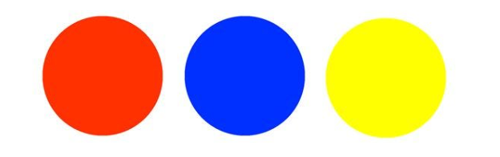
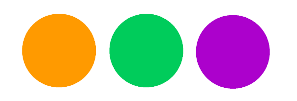
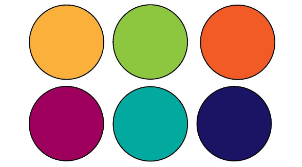
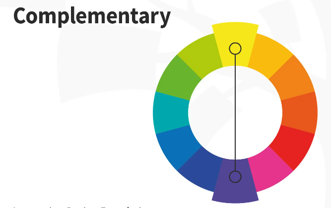
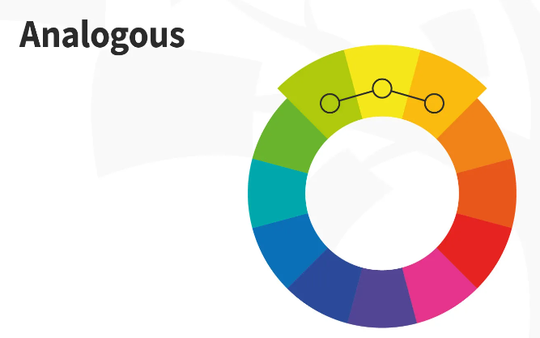
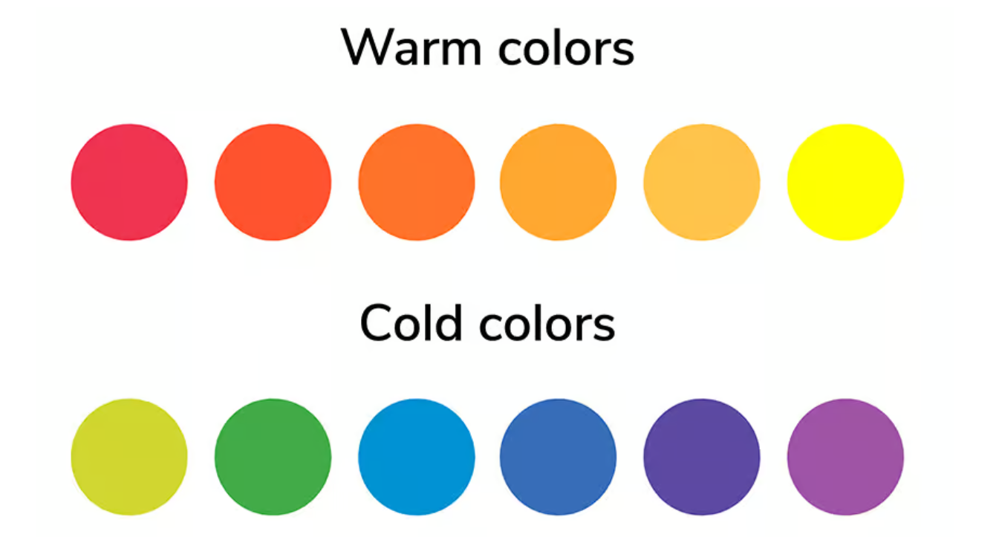
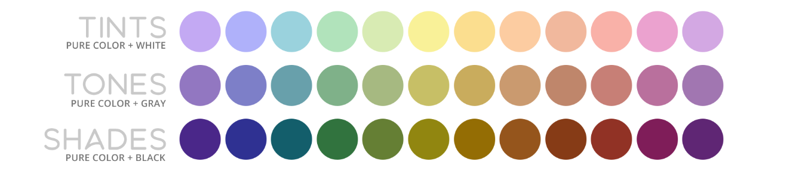

Design theory is a broad field that encompasses principles, concepts, and methodologies that are used to create effective and impactful designs across various disciplines. Examples include product design, graphic design, architecture, user experience (UX) design, and more
Design Principles
Design Principles are the fundamental guidelines that help creators, designers, and artists arrange the elements of their work efficiently. These principles create functional and visually appealing designs across various mediums. Click on the buttons below to find out more!
• Arrange elements to create visual stability, whether symmetrically, asymmetrically, or radially.
• Ensure all elements work together cohesively for a consistent look and feel.
• Highlight differences between elements for visual interest and emphasis.
• Make certain elements stand out to draw attention and establish hierarchy.
• Maintain proper size and ratio of elements for visual balance.
• Repeat elements to create patterns and guide the viewer's eye through the design.
• Establish the order of importance to direct the viewer's focus.
Colour Theory
Colour Theory is essentially the study of how colours interact with each other and how they can be combined or contrasted to create visually appealing compositions.Click on the buttons below to find out more!
Primary Colours
• These are the foundation of color theory. In traditional color theory, the primary colors are red, blue, and yellow. All other colors can be created by mixing these primary colors together.

Secondary Colours
• These are created by mixing equal parts of two primary colors. The secondary colors are orange (red + yellow), green (blue + yellow), and purple (red + blue).

Tertiary Colours
• These are created by mixing a primary color with a secondary color adjacent to it on the color wheel. For example, mixing red and orange creates red-orange. Tertiary colors allow for more nuanced shades and tones.

Complementary Colours
• These are colors that are opposite each other on the color wheel. When placed next to each other, they create a strong contrast and enhance each other's intensity. Examples include red and green, blue and orange, and yellow and purple.

Analogous Colours
• These are colors that are adjacent to each other on the color wheel. They usually create a harmonious and calming effect when used together. An example would be yellow, yellow-green, and green.

Warm & Cool Colours
• Colors can be categorized as either warm or cool based on their placement on the color wheel. Warm colors (such as red, orange, and yellow) evoke feelings of warmth, energy, and excitement, while cool colors (such as blue, green, and purple) evoke feelings of calmness, tranquility, and serenity.

Tint, Shade & Tone
• These terms refer to variations of a single color. A tint is created by adding white to a color, making it lighter. A shade is created by adding black to a color, making it darker. And a tone is created by adding gray to a color, altering its intensity.

Typography
Typography is the art and technique of arranging type to make written language legible, readable, and visually appealing when displayed. It involves selecting typefaces, fonts, point sizes, line lengths, line-spacing, and adjusting the spacing between groups of letters and between pairs of letters.
Layout
UI/UX design is a blend of art and science, aiming to create digital experiences that are not only visually appealing but also intuitive and user-friendly.